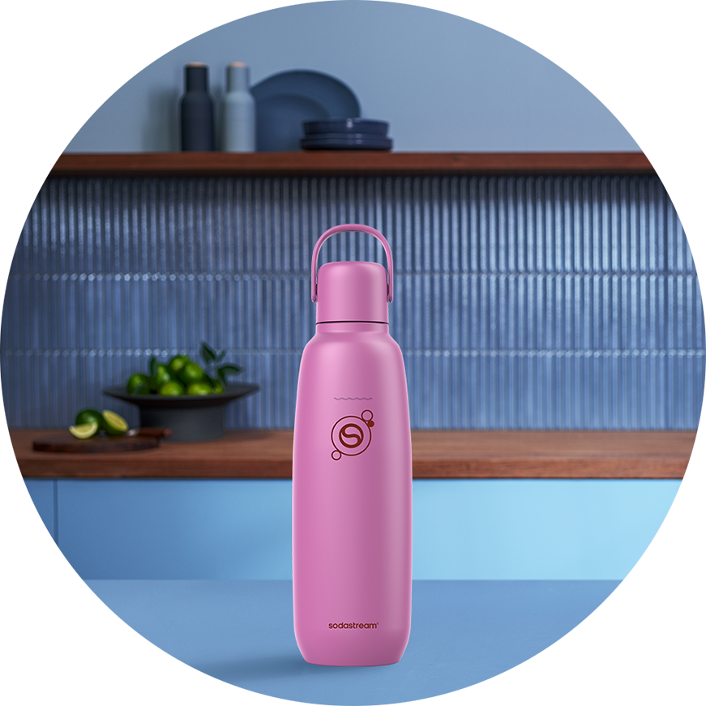
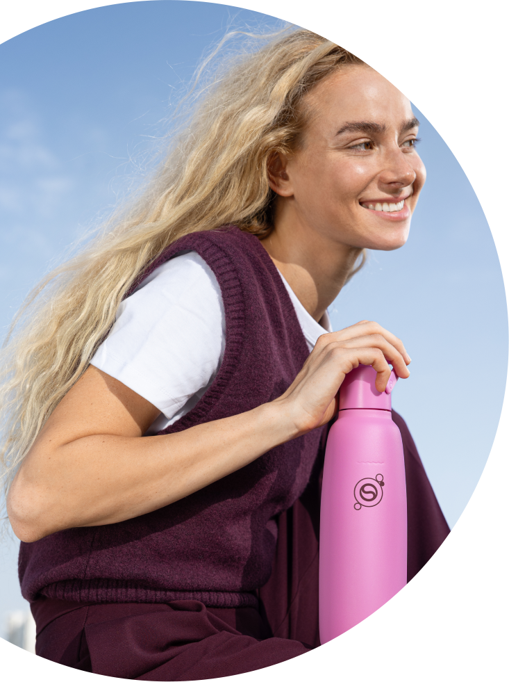
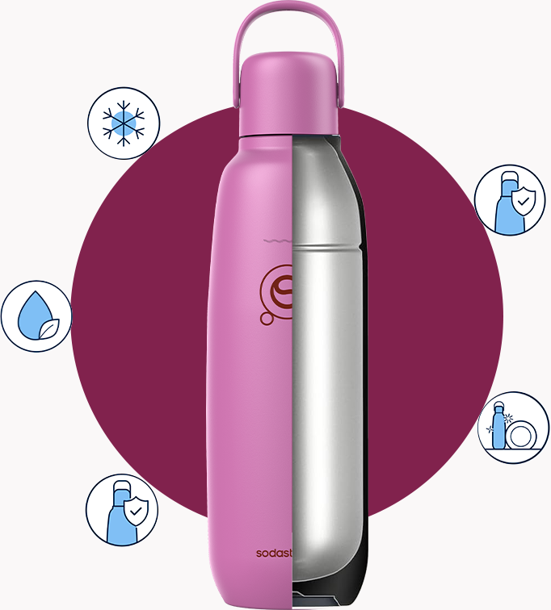
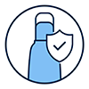
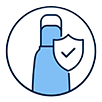
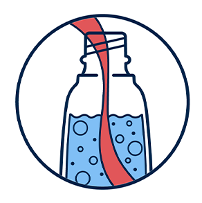
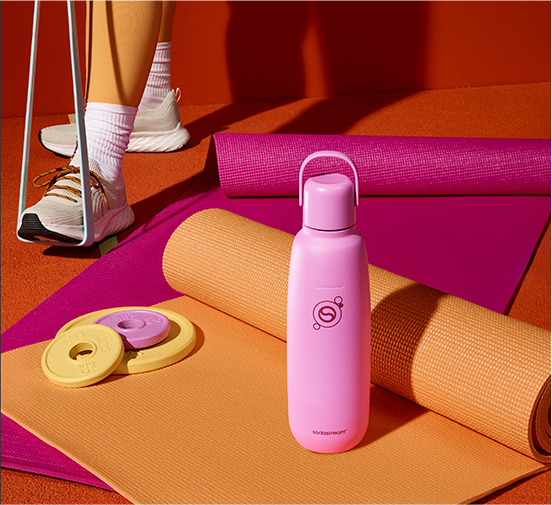
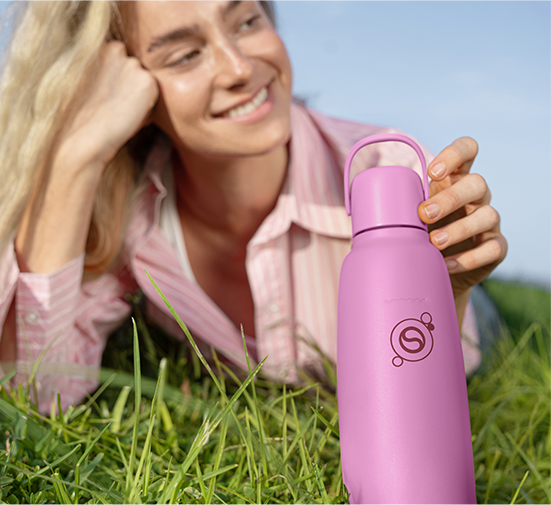

fizz & go™
butelka termiczna
do gazowania wody,
różowa, 0,9 l
idealnie schłodzone napoje nawet do
12h
idealnie schłodzone napoje nawet do
12h

złap ulubione bąbelki do termicznej butelki i zabierz je ze sobą!
Lubisz przedmioty, z którymi codzienne rytuały nabierają stylu? Butelka Sodastream® fizz&go™ — w zachwycającym, różowym kolorze dotrzyma Ci kroku od rana do wieczora. Łączy 3 praktyczne funkcje w jednym — jest jednocześnie butelką do saturatora, termosem na zimne i ciepłe napoje oraz bidonem na wodę. Dodatkowo, dzięki specjalnej konstrukcji, utrzyma chłodną temperaturę napoju aż do 12 godzin. To Twój nowy kompan codzienności — idealny na wycieczkę, do pracy czy spacer po mieście. Jednocześnie wyróżni Cię nowoczesnym, modnym designem i kolorem, który przyciąga spojrzenia.

intensywny
róż

Wyrazisty, ale harmonijny odcień, idealny dla osób, które lubią wyróżniać się z tłumu w naturalny, niewymuszony sposób. Świetnie dopełni stylizacje, dodając im charakteru i wyrazistości.
funkcjonalny design, który współgra z Tobą
Sodastream® fizz&go™ to połączenie wyrazistego koloru i realnej funkcjonalności. To butelka termiczna do zadań specjalnych, stworzona z myślą o intensywnym dniu — jest odporna na uszkodzenia i korozję, a przy tym wyjątkowo szczelna, więc nie musisz obawiać się przeciekania ani utraty bąbelków. Dodatkowo, po całym dniu możesz błyskawicznie ją umyć w zmywarce by była zawsze gotowa do działania. To Twoje niezawodne wsparcie w drodze do orzeźwienia i nawodnienia.


Idealnie schłodzone
napoje do 12 godzin
Szczelny korek
i hermetyczna
konstrukcja
Materiał
wolny od BPA
Przystosowana
do mycia
w zmywarce
Wytrzymała stal
nierdzewna 18/8
Idealnie schłodzone napoje do 12 godzin

Szczelny korek i hermetyczna konstrukcja
Materiał wolny od BPA
Dostosowana do mycia w zmywarce

Wytrzymała stal nierdzewna 18/8
prosty krok, który ma znaczenie
Chcesz zrobić coś dobrego
dla siebie i jednocześnie
dla środowiska? Sodastream® fizz&go™
ułatwia dbanie
o codzienne nawodnienie,
a przy okazji pomaga zadbać
o planetę — bez wysyłku!
Dzięki wielorazowemu rozwiązaniu 3 w 1 możesz
z łatwością zastąpić
jednorazowe butelki i puszki, łącząc wygodę z eko-nawykiem.
To mały krok, który robi
dużą różnicę.

gazuj, miksuj, smakuj

Napełnij butelkę termiczną Sodastream® fizz&go™ wodą z kranu i zamontuj w saturatorze.

Naciśnij przycisk gazowania kilka razy, aż uzyskasz pożądany poziom bąbelków.

Dodaj ulubiony syrop Sodastream lub wybrane dodatki. Lekko wstrząśnij i gotowe!
Sodastream® fizz&go™ — dowiedz się więcej
o butelce do zadań specjalnych

Czy w butelce Sodastream® fizz&go™
można gazować wodę?
Tak! Sodastream® fizz&go™
to butelka 3 w 1,
w której możesz nagazować wodę, a następnie wygodnie zabrać ją ze sobą. Jest
kompatybilna
z saturatorami Sodastream Terra, Duo, Art,
Mix i Ensō.
Jak prawidłowo czyścić butelkę Sodastream® fizz&go™?
Butelkę Sodastream® fizz&go™
możesz włożyć
do zmywarki lub umyć ręcznie ciepłą wodą
z odrobiną płynu. Kilka chwil i gotowe!
Czy do butelki Sodastream® fizz&go™
można wlać ciepły napój?
Sodastream® fizz&go™
to praktyczny bidon termiczny, w którym możesz przechowywać zarówno zimne
jak i ciepłe napoje, takie jak kawa czy herbata*.
*UWAGA! Nie nasycaj gazem wody o temperaturze powyżej 45°C.
Zachowaj szczególną ostrożność podczas
przechowywania
gorących płynów w butelce i otwierania butelki zawierającej gorące płyny.
Sodastream® fizz&go™ – zawsze w Twoim rytmie
Lubisz, gdy dużo się dzieje i każdy dzień
przynosi coś nowego?
Różowa butelka Sodastream® fizz&go™ dotrzyma Ci kroku podczas porannego joggingu, w drodze na
ulubione
zajęcia czy podczas
weekendowego wypadu za miasto. Jest wytrzymała i gotowa na każde wyzwanie,
dlatego zawsze możesz na nią liczyć — w trakcie intensywnej aktywności i na co dzień.
działaj bez ograniczeń
Lubisz praktyczne rozwiązania, z którymi nic Cię
nie ogranicza? Bidon Sodastream® fizz&go™ dzięki szczelnej konstrukcji możesz
bezpiecznie
nosić
w plecaku
lub torbie —
bez obaw o przeciekanie. Dodatkowo, butelka oszczędza Twój czas na co dzień — wystarczy
włożyć ją
do
zmywarki by można
było z niej korzystać kolejnego dnia.
podaruj stylowy upominek
Potrzebujesz oryginalnego prezentu dla bliskiej osoby? Butelka Sodastream® fizz&go™ to stylowy
i
praktyczny upominek — który docenią zarówno gadżeciarze
jak i aktywne osoby, które zawsze są gotowe na coś nowego. Dodatkowo nowoczesny
design i wyrazisty
kolor sprawiają, że z pewnością przypadnie do gustu obdarowanej osobie.
ruszaj w drogę
Często jesteś w trasie i lubisz mieć wszystko
pod kontrolą? Termiczna butelka Sodastream® fizz&go™ idealnie odnajduje sie w
podróży
—
pasuje do
uchwytów samochodowych
i bez problemu znosi codzienne wyzwania. Dzięki temu Twój ulubiony napój — ciepły
lub zimny — będzie od ręką, zawsze gdy go potrzebujesz.

kreuj napoje, które zawsze do Ciebie pasują

ikony smaku w Twojej wersji
Przygotuj napoje na bazie syropów Sodastream® o smaku Pepsi®, 7UP® czy Mirindy® tak jak lubisz — z ilością bąbelków i smaku dobraną do Twojego gustu. Dodaj kostki lodu albo kilka listków mięty i nadaj legendarnym smakom jeszcze więcej charakteru!

codzienny rytuał w nowej odsłonie
Chcesz zaserwować bliskim pyszny napój z bąbelkami? Syropy Sodastream® o smaku Coli czy Tonicu dodają codzienności smaku i stanową idealne tło dla wspólnych momentów. Dodaj kostki lodu, plasterki cytryny i gotowe!

wspomnienie lata
Marzysz o powrocie do wakacyjnych chwil? Sięgnij po owocowe syropy Sodastream® bez dodatku cukru i poczuj prawdziwy smak lata! Syrop o smaku Malinowym przeniesie Cię do słonecznego ogrodu, a syrop o smaku Marakui przywiedzie na myśl tropikalną plażę!